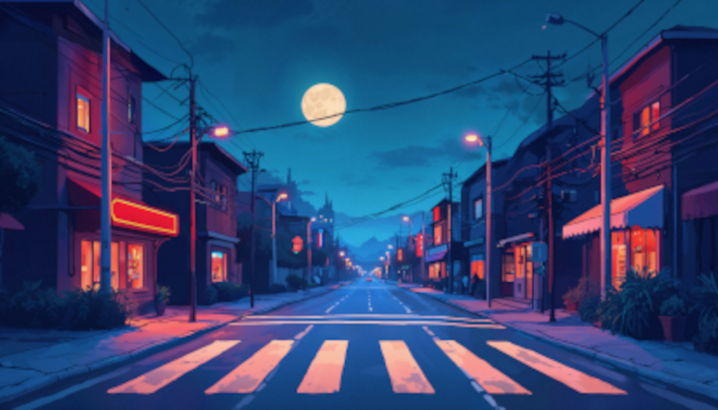
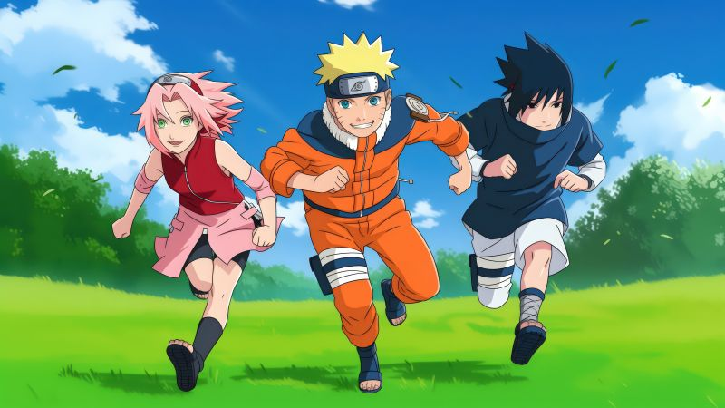
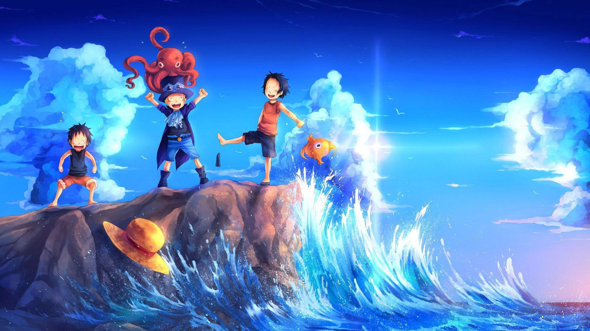
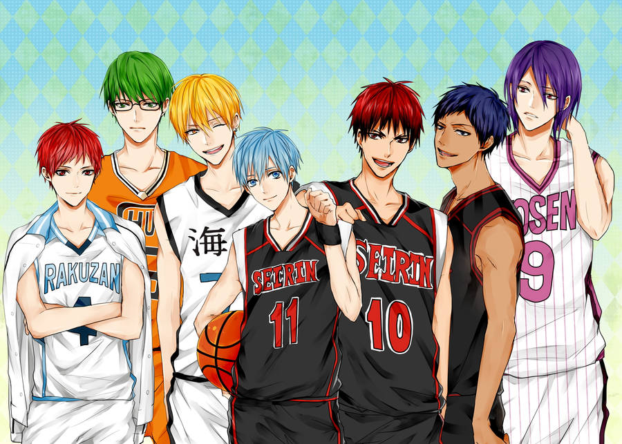
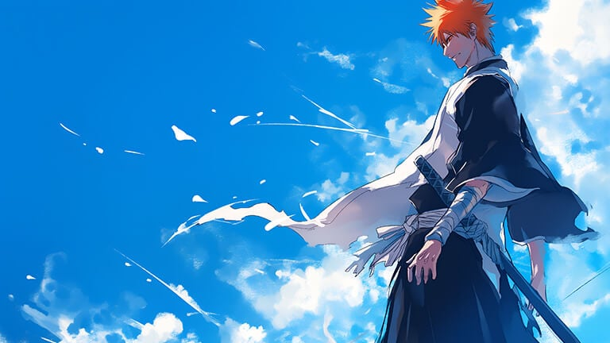
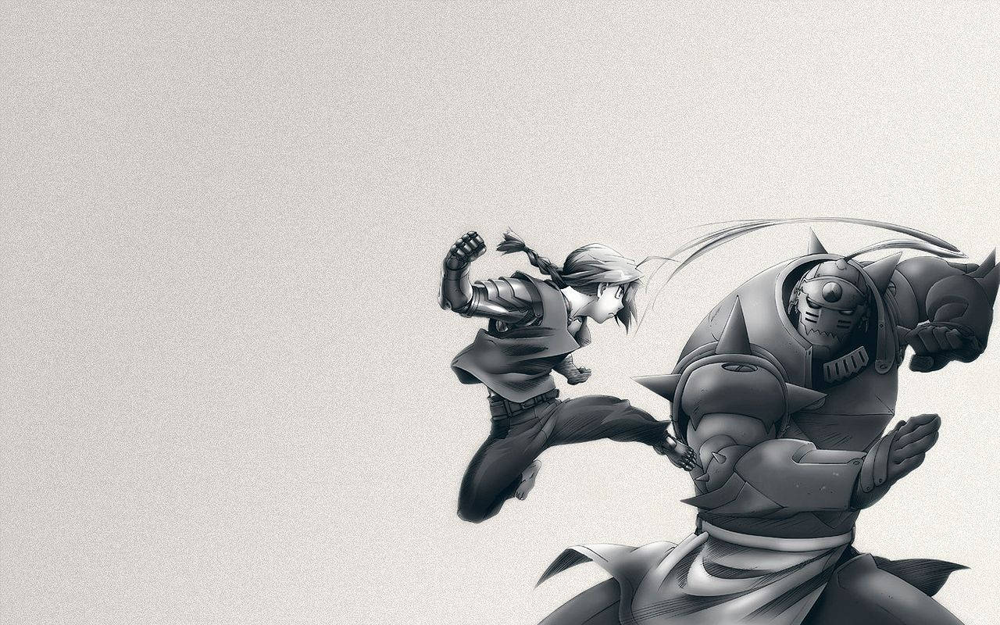
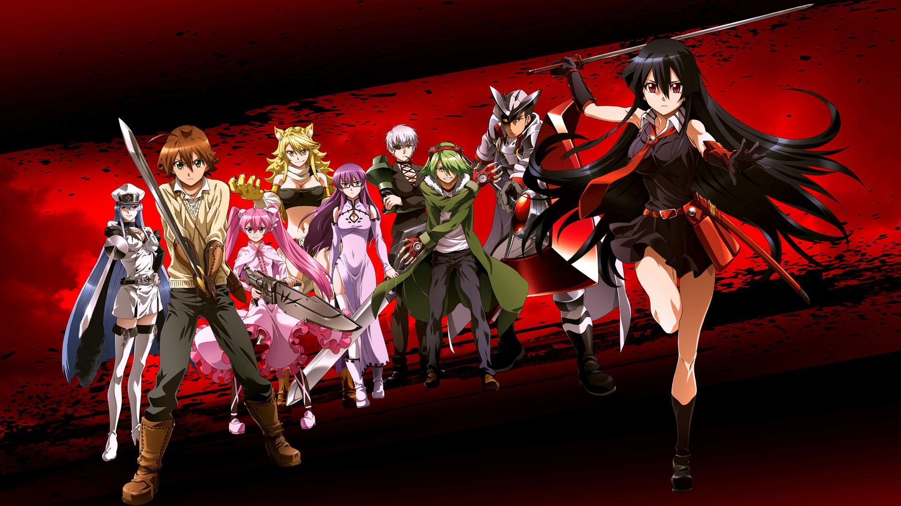
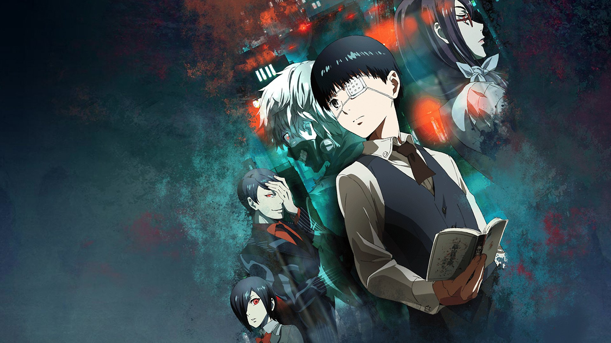

Origem Dos Animes
Os animes surgiram no Japão no início do século XX, inspirados nas animações ocidentais. O primeiro anime reconhecido foi Namakura Gatana (1917), um curta-metragem mudo. Com o tempo, a animação japonesa desenvolveu um estilo único, destacando-se pelo uso de cores vibrantes, expressões exageradas e narrativas profundas. Na década de 1960, Osamu Tezuka, conhecido como o "pai do anime", revolucionou o gênero com Astro Boy, introduzindo técnicas que tornaram a animação mais fluida e acessível. Com o avanço da tecnologia e a globalização, os animes se tornaram um fenômeno mundial, conquistando fãs de todas as idades e influenciando a cultura pop até hoje.
Top 10 Melhores Animes
- Naruto 
- One Piece 
- Kuroko No Basket 
- Bleach 
- Demon Slayer
- Full Metal Alchemist 
- Attack On Titan
- Akame Ga Kill 
- Tokyo Ghoul 
- Angel Beats